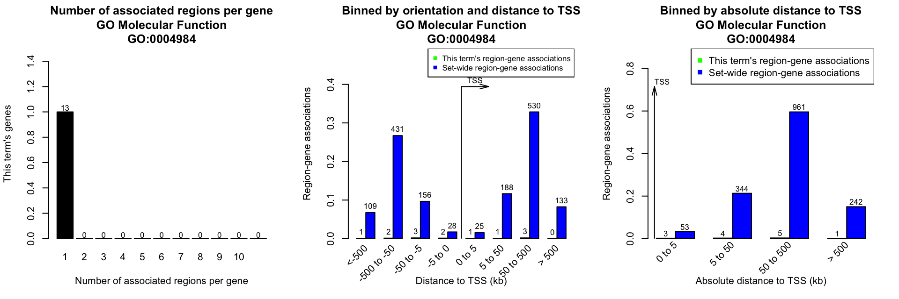

Note: On Aug 19 2019 GREAT released version 4 where it supports hg38 genome and removes some ontologies such pathways. submitGreatJob() still takes hg19 as default. hg38 can be specified by the species = "hg38" argument. To use the older versions such as 3.0.0, specify as submitGreatJob(..., version = "3.0.0").
GREAT (Genomic Regions Enrichment of Annotations Tool) is a popular web-based tool to associate biological functions to genomic regions. The rGREAT package makes GREAT anlaysis automatic by first constructing a HTTP POST request according to user’s input and retrieving results from GREAT web server afterwards.
Load the package:
library(rGREAT)The input data is either a GRanges object or a BED-format data frame, no matter it is sorted or not. In following example, we use a data frame which is randomly generated.
set.seed(123)
bed = circlize::generateRandomBed(nr = 1000, nc = 0)
bed[1:2, ]## chr start end
## 1 chr1 7634457 9204434
## 2 chr1 9853594 10435028Submit genomic regions by submitGreatJob(). Before submitting, genomic regions will be sorted and overlapping regions will be merged.
The returned variable job is a GreatJob class instance which can be used to retrieve results from GREAT server and stored results which are already downloaded.
job = submitGreatJob(bed)You can get the summary of your job by directly calling job variable.
job## Submit time: 2019-09-29 20:22:29
## Version: 4.0.4
## Species: hg19
## Inputs: 1005 regions
## Background: wholeGenome
## Model: Basal plus extension
## Proximal: 5 kb upstream, 1 kb downstream,
## plus Distal: up to 1000 kb
## Include curated regulatory domains
##
## Enrichment tables for following ontologies have been downloaded:
## NoneMore parameters can be set for the job:
job = submitGreatJob(bed, species = "mm9")
job = submitGreatJob(bed, bg, species = "mm9")
job = submitGreatJob(bed, adv_upstream = 10, adv_downstream = 2, adv_span = 2000)
job = submitGreatJob(bed, rule = "twoClosest", adv_twoDistance = 2000)
job = submitGreatJob(bed, rule = "oneClosest", adv_oneDistance = 2000)Also you can choose different versions of GREAT for the analysis.
job = submitGreatJob(bed, version = "3.0")
job = submitGreatJob(bed, version = "2.0")Available parameters are (following content is copied from GREAT website):
-
species: “hg38”, “hg19”, “mm10”, “mm9” are supported in GREAT version 4.x.x, “hg19”, “mm10”, “mm9”, “danRer7” are supported in GREAT version 3.x.x and “hg19”, “hg18”, “mm9”, “danRer7” are supported in GREAT version 2.x.x. -
bgChoise: Background regions.wholeGenomeanddata. If this value is set todata,bgargument should be specified -
includeCuratedRegDoms: Whether to include curated regulatory domains. -
rule: How to associate genomic regions to genes.-
basalPlusExt: mode ‘Basal plus extension’. Gene regulatory domain definition: Each gene is assigned a basal regulatory domain of a minimum distance upstream and downstream of the TSS (regardless of other nearby genes). The gene regulatory domain is extended in both directions to the nearest gene’s basal domain but no more than the maximum extension in one direction.-
adv_upstream: proximal extension to upstream (unit: kb) -
adv_downstream: proximal extension to downstream (unit: kb) -
adv_span: maximum extension (unit: kb)
-
-
twoClosest: mode ‘Two nearest genes’. Gene regulatory domain definition: Each gene is assigned a regulatory domain that extends in both directions to the nearest gene’s TSS but no more than the maximum extension in one direction.-
adv_twoDistance: maximum extension (unit: kb)
-
-
oneClosest: mode ‘Single nearest gene’. Gene regulatory domain definition: Each gene is assigned a regulatory domain that extends in both directions to the midpoint between the gene’s TSS and the nearest gene’s TSS but no more than the maximum extension in one direction.-
adv_oneDistance: maximum extension (unit: kb)
-
-
With job, we can now retrieve results from GREAT. The first and the primary results are the tables which contain enrichment statistics for the analysis. By default it will retrieve results from three GO Ontologies and all pathway ontologies. All tables contains statistics for all terms no matter they are significant or not. Users can then make filtering yb self-defined cutoff.
There is a column for adjusted p-values by “BH” method. Other p-value adjustment methods can be applied by p.adjust().
The returned value of getEnrichmentTables() is a list of data frames in which each one corresponds to tables for single ontology. The structure of data frames are same as the tables on GREAT website.
tb = getEnrichmentTables(job)
names(tb)## [1] "GO Molecular Function" "GO Biological Process" "GO Cellular Component"tb[[1]][1:2, ]## ID name Binom_Genome_Fraction Binom_Expected
## 1 GO:0016798 hydrolase activity, acting on glycosyl bonds 0.0100418100 10.0920200
## 2 GO:0051787 misfolded protein binding 0.0007646973 0.7685208
## Binom_Observed_Region_Hits Binom_Fold_Enrichment Binom_Region_Set_Coverage Binom_Raw_PValue
## 1 20 1.981763 0.0199005 0.003633144
## 2 4 5.204804 0.0039801 0.007894598
## Binom_Adjp_BH Hyper_Total_Genes Hyper_Expected Hyper_Observed_Gene_Hits Hyper_Fold_Enrichment
## 1 1 127 10.756210 17 1.580482
## 2 1 12 1.016335 4 3.935710
## Hyper_Gene_Set_Coverage Hyper_Term_Gene_Coverage Hyper_Raw_PValue Hyper_Adjp_BH
## 1 0.010821130 0.1338583 0.03955741 1.0000000
## 2 0.002546149 0.3333333 0.01458949 0.6280924Information stored in job will be updated after retrieving enrichment tables.
job## Submit time: 2019-09-29 20:22:29
## Version: 4.0.4
## Species: hg19
## Inputs: 1005 regions
## Background: wholeGenome
## Model: Basal plus extension
## Proximal: 5 kb upstream, 1 kb downstream,
## plus Distal: up to 1000 kb
## Include curated regulatory domains
##
## Enrichment tables for following ontologies have been downloaded:
## GO Biological Process
## GO Cellular Component
## GO Molecular FunctionYou can get results by either specifying the ontologies or by the pre-defined categories (categories already contains pre-defined sets of ontologies):
tb = getEnrichmentTables(job, ontology = c("GO Molecular Function", "BioCyc Pathway"))
tb = getEnrichmentTables(job, category = c("GO"))All available ontology names for given species can be get by availableOntologies() and all available ontology categories can be get by availableCategories(). Here you do not need to provide species information because job already contains it.
availableOntologies(job)## [1] "GO Molecular Function" "GO Biological Process" "GO Cellular Component"
## [4] "Mouse Phenotype" "Mouse Phenotype Single KO" "Human Phenotype"
## [7] "Ensembl Genes"availableCategories(job)## [1] "GO" "Phenotype" "Genes"availableOntologies(job, category = "GO")## [1] "GO Molecular Function" "GO Biological Process" "GO Cellular Component"Association between genomic regions and genes can be get by plotRegionGeneAssociationGraphs(). The function will make the three plots which are same as on GREAT website and returns a GRanges object which contains the gene-region associations.
res = plotRegionGeneAssociationGraphs(job)
res[1:2, ]## GRanges object with 2 ranges and 2 metadata columns:
## seqnames ranges strand | gene distTSS
## <Rle> <IRanges> <Rle> | <character> <numeric>
## [1] chr1 7634457-9204434 * | SLC45A1 41560
## [2] chr1 7634457-9204434 * | RERE 458078
## -------
## seqinfo: 24 sequences from an unspecified genome; no seqlengthsFor those regions that are not associated with any genes under current settings, the corresponding gene and distTSS columns will be NA.
You can also choose only plotting one of the three figures.
plotRegionGeneAssociationGraphs(job, type = 1)By specifying ontology and term ID, you can get the association in a certain term. Here the term ID is from the first column of the data frame which is returned by getEnrichmentTables().
res = plotRegionGeneAssociationGraphs(job, ontology = "GO Molecular Function",
termID = "GO:0004984")## The webpage for 'GOMolecularFunction:GO:0004984' is available at:
## http://great.stanford.edu/public-4.0.4/cgi-bin/showTermDetails.php?termId=GO:0004984&ontoName=GOMolecularFunction&ontoUiName=GO Molecular Function&sessionName=20190929-public-4.0.4-HHYJAG&species=hg19&foreName=filefd1d55787507.gz&backName=&table=region
res[1:2, ]## GRanges object with 2 ranges and 2 metadata columns:
## seqnames ranges strand | gene distTSS
## <Rle> <IRanges> <Rle> | <character> <numeric>
## [1] chr1 247871555-248931674 * | OR2M4 -616
## [2] chr3 96368632-99050767 * | OR5AC2 -96317
## -------
## seqinfo: 7 sequences from an unspecified genome; no seqlengthsSession info
## R version 3.6.1 (2019-07-05)
## Platform: x86_64-apple-darwin15.6.0 (64-bit)
## Running under: macOS Mojave 10.14.2
##
## Matrix products: default
## BLAS: /Library/Frameworks/R.framework/Versions/3.6/Resources/lib/libRblas.0.dylib
## LAPACK: /Library/Frameworks/R.framework/Versions/3.6/Resources/lib/libRlapack.dylib
##
## locale:
## [1] en_GB.UTF-8/en_GB.UTF-8/en_GB.UTF-8/C/en_GB.UTF-8/en_GB.UTF-8
##
## attached base packages:
## [1] parallel stats4 stats graphics grDevices utils datasets methods base
##
## other attached packages:
## [1] rGREAT_1.17.1 GenomicRanges_1.36.1 GenomeInfoDb_1.20.0 IRanges_2.18.2
## [5] S4Vectors_0.22.1 BiocGenerics_0.30.0 knitr_1.25
##
## loaded via a namespace (and not attached):
## [1] Rcpp_1.0.2 compiler_3.6.1 XVector_0.24.0 bitops_1.0-6
## [5] tools_3.6.1 zlibbioc_1.30.0 digest_0.6.21 evaluate_0.14
## [9] memoise_1.1.0 rlang_0.4.0 yaml_2.2.0 pkgdown_1.4.1
## [13] xfun_0.9 GenomeInfoDbData_1.2.1 stringr_1.4.0 desc_1.2.0
## [17] fs_1.3.1 GlobalOptions_0.1.0 rprojroot_1.3-2 grid_3.6.1
## [21] R6_2.4.0 GetoptLong_0.1.7 rmarkdown_1.15 magrittr_1.5
## [25] backports_1.1.4 htmltools_0.3.6 MASS_7.3-51.4 assertthat_0.2.1
## [29] shape_1.4.4 circlize_0.4.8 colorspace_1.4-1 stringi_1.4.3
## [33] RCurl_1.95-4.12 crayon_1.3.4 rjson_0.2.20